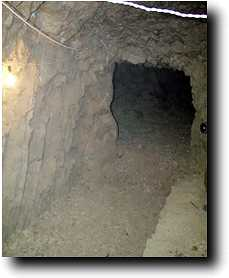
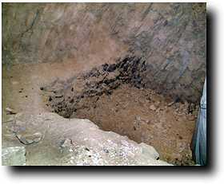
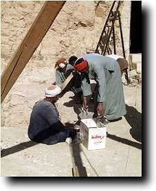
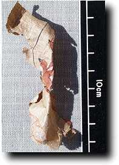
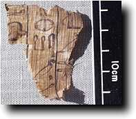
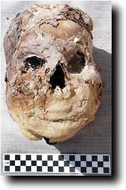
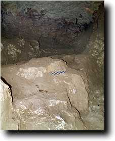

Saturday 26 December
Lots of different things were happening today, so it is a bit of a blur. Rosalind Janssen arrived to begin to look at our textiles. In shaft I, we finished the first sweep across the burial chamber, and moved out to begin to take off the debris on the sunken area in front of that chamber. So far we have gone down about 40 cm with no sign of the rock, although the debris still contains the same sort of material as elsewhere. This is what it looked like at the end of work for the day:

|
Today saw the end of work in Shaft H. The second chamber was almost an anticlimax, since it seems that it was never hollowed out properly, and large areas of rock were left uncut. Presumably it was never finished. But was it ever used for a burial? I'll take a photo tomorrow.
Here is another picture of the sunken area in Shaft I.

Today we also began to refill the small courtyard shaft (G) with debris, since, as it has no associated chambers, there is no compelling need to leave it accessible. With the end of work in the second shaft, we had also to lay off some workmen.
|
Sunday 27 December
We are now down to a total of 20 workmen. Six of these are digging or carrying baskets in the shaft, three are controlling the winch and dealing with the baskets, two are sieving, and the rest carrying baskets. They are all now working in the courtyard.

Down in shaft I, the area in front of the burial chamber indeed proved to be a trench approximately 50 cm in depth. Some of the walls of this trench appear to have had resin poured over them--was this part of the burial ceremony? We then moved in for the final sweep across what we now think to have been the main burial chamber; the room before it is now clearly something of an anteroom.
Finds of pottery, papyri and coffin fragments continue to be made.
Some nice fragments of papyrus have appeared, but they need conserving before they can be fully appreciated.
One, shown here, has part of a vignette from the Book of the Dead on it, while the other shown here has part of the title 'overseer of sealbearers' of Senneferi (at the top left).
At least one fragment (not shown) bears his name.
|
The skull shown below was also found in the chamber.

Despite the number of other finds, there have not been many human remains found in this chamber, so we wonder whether this could be the head of Senneferi. The manner of mummification is very elaborate and different from those bodies found elsewhere in the complex, so it seems plausible to imagine it as being that of someone as important as Senneferi. It is also really exciting to think we might have his body, especially since we have that of Wedjahor, the 25th dynasty priest who used this tomb as a burial place 700 years later.
Shaft H was planned today, so that it can now be filled with pottery discards. Yesterday I promised a view taken inside the second room:

|

 The Dig Diary 1998--Part 8
The Dig Diary 1998--Part 8